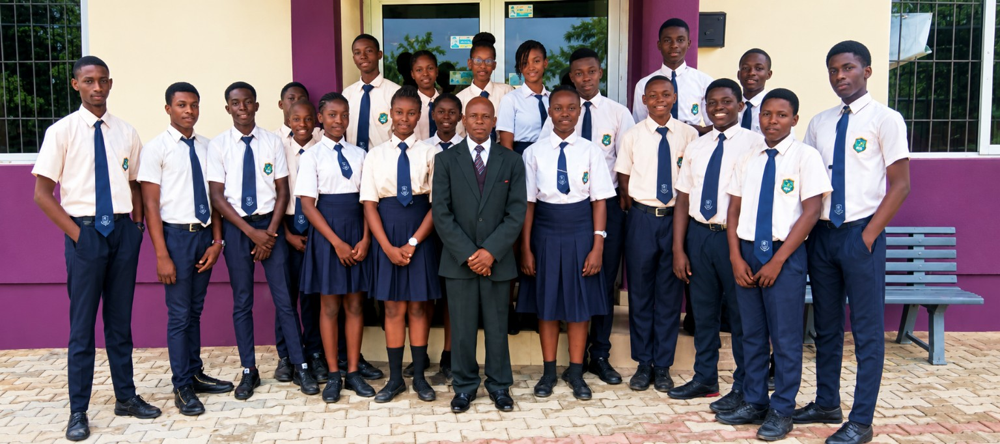

Nursery & Elementary School
A nurturing early learning environment emphasizing literacy, numeracy, creative discovery, and strong moral foundational habits.
Explore Nursery & Elementary
Welcome to George & Duke Institutions
From early years foundation through college to Cambridge A-Levels, George & Duke provides an inspiring learning environment where academic excellence and sound moral character walk hand in hand.
Admissions
Admissions are open for the 2026/2027 academic session across all academic levels.
Academics
Rigorous British-Nigerian curriculum fostering analytical thinkers and lifelong learners.
Student Life
Modern boarding, competitive sports, creative arts, and leadership opportunities.

About Our Institution
George & Duke Institutions was established to bridge academic rigor with intentional character formation. Across our campuses in Felele and Odo-Ona, Ibadan, we cultivate an atmosphere of curiosity, discipline, and intellectual enterprise.
Our dedicated educators guide students through formative early childhood milestones, rigorous secondary examinations, and advanced Cambridge A-Level programmes, equipping them to excel in leading universities worldwide.
Learn More About UsOur Academic Divisions
Structured learning environments tailored to each stage of your child's intellectual, emotional, and social development.
A nurturing early learning environment emphasizing literacy, numeracy, creative discovery, and strong moral foundational habits.
Explore Nursery & Elementary
Comprehensive junior and senior secondary education preparing students for WAEC, NECO, and BECE with state-of-the-art STEM and arts facilities.
Explore International College
Rigorous Cambridge Assessment International Education and Direct Entry pathways leading to admission in top universities across Nigeria and abroad.
Explore A-Level ProgrammeThe George & Duke Advantage
We blend high academic standards with enduring values, modern infrastructure, and personalized mentorship.
Excellence
Highly qualified, passionate educators committed to academic rigor, student mentorship, and unlocking individual potential.
Character
Discipline, integrity, empathy, and respect are deeply embedded into everyday school life and social interactions.
Infrastructure
Fully equipped science and computer laboratories, dedicated creative arts studios, and secure, comfortable boarding hostels.
Growth
A rich spectrum of sports, musical ensembles, public speaking, STEM clubs, and community engagement for well-rounded growth.
Academic Distinction
Our academic record reflects intentional teaching, focused mentorship, and an environment that expects excellence. George & Duke students consistently record 100% pass rates in WAEC and NECO, alongside outstanding distinctions in Cambridge International A-Levels.
Graduates from our programmes successfully matriculate into top-tier universities in Nigeria, the United Kingdom, Canada, the United States, and across the globe.
Stay Informed
Applications are officially open for early childhood, secondary college, and Cambridge A-Level programmes. Entrance assessment dates and registration guidelines are now available.
Admission DetailsGeorge & Duke students earned top honours at the inter-school science exhibition, showcasing innovative robotics and practical agricultural science research projects.
Read StoryPreparations are underway for our much-anticipated annual athletics competition and cultural showcase celebrating heritage, teamwork, and athletic talent.
Event Details